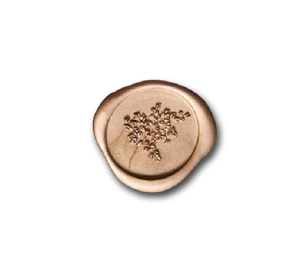
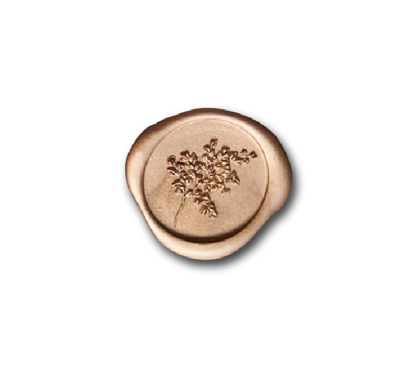

พระบาทสมเด็จพระปรมินทรมหาภูมิพลอดุลยเดชทรงเริ่มเรียนดนตรีเมื่อมีพระชนมายุ 1พรรษา ขณะประทับที่ประเทศสวิตเซอร์แลนด์โดยทรงเรียนกับนายเวย์เบรชท์ (Weybrecht) ชาวอัลซาส (Alsace) เรื่องการเป่าแซกโซโฟน วิชาการดนตรี การเขียนโน้ตและการบรรเลง ดนตรีสากลต่างๆ ในแนวดนตรีคลาสสิกเป็นเบื้องต้น ต่อมาจึงเริ่มฝึกดนตรีแจ๊ส โดยทรง หัดเป่าแซกโซโฟนจนชำนาญ ทรงเครื่องดนตรีได้ดีหลายชนิด ทั้งประเภทเครื่องลม เช่น แซกโซโฟน, คลาริเนต และประเภทเครื่องทองเหลืองเช่นทรัมเป็ต รวมทั้งเปียโนและกีตาร์ที่ ทรงฝึกเพิ่มเติมในภายหลังเพื่อประกอบการพระราชนิพนธ์เพลงและเพื่อทรงดนตรีร่วมกับวง ดนตรีส่วนพระองค์ แนวดนตรีที่พระองค์โปรดคือแจ๊สดิ๊กซีแลนด์ (Dixieland Jazz) ซึ่งมีที่มาจากชื่อวงดนตรีแจ๊สนักดนตรีผิวขาว The Original Dixieland Jazz Band เป็นสไตล์ของวงดนตรีจากเมืองนิวออร์ลีนส์ เป็นแจ๊สที่มีจังหวะและความสนุกเร้าใจ ตื่นเต้น ครึกครื้น สนุกสนานเร้าใจ The Preservation Hall Jazz Banวงดนตรีแจ๊สจากนิวออร์ลีนส์ คือวงโปรดของพระองค์ ซึ่งเล่นดนตรีกันสดๆไม่มีโน้ตทำให้นักดนตรีต้องใช้ความสามารถมาก
ขณะมีพระชนมายุได้ 18 พรรษา ทรงเริ่มพระราชนิพนธ์เพลง และในปี พ.ศ.2489 ทรงพระราชนิพนธ์ทำนองเพลง “แสงเทียน” เป็นเพลงพระราชนิพนธ์เพลงแรก จนถึงปัจจุบัน มีเพลงพระราชนิพนธ์ทั้งสิ้น 48 เพลง แต่ละเพลงมีท่วงทำนองที่ไพเราะประทับใจผู้ฟังสอดคล้อง กับเนื้อหาเพลงซึ่งมีความหมายดีงาม ทั้งในแง่ของภาษาและการสื่อถึงเรื่องราวต่างๆ ได้อย่างลึกซึ้ง พระองค์ทรงประพันธ์ทำนองเองทั้งหมดแต่ละเพลงล้วนมีความไพเราะอย่างน่าทึ่ง ทั้งยังมีเอกลักษณ์ในการประพันธ์ทำนองของพระองค์เอง เวลาที่ศิลปินแต่งเพลง เรามักจะรู้สึกได้ว่าเขามีแรงบันดาลใจจากใคร อาจเป็นศิลปินไทยด้วยกันหรือศิลปินต่างประเทศ
นอกจากพระอัจฉริยภาพในการประพันธ์ทำนองและเรียบเรียงเพลงแล้วในบทเพลงพระราชนิพนธ์ ก็มีเพลงที่ทรงประพันธ์คำร้องภาษาอังกฤษในเพลง “Still on My Mind” “Old-Fashioned Melody” “No Moon”,“Dream Island” “ECHO” ซึ่งล้วนแล้วแต่มีภาษางดงามดั่งกวี นอกจากนั้น บทเพลงพระราชนิพนธ์ยังได้รับการอัญเชิญจากศิลปินชื่อดังและวงออร์เคสตราระดับโลกไปบรรเลง ในงานคอนเสิร์ตซึ่งจัดขึ้นในวาระสำคัญต่างๆ ทั้งพระองค์ท่านได้ทรงดนตรีกับนักดนตรีที่มี ชื่อเสียงระดับโลกมากมาย อาทิ Benny Goodman, Louis Armstrong, Jack Teagarden, Stan Getz นักดนตรีระดับโลกเหล่านี้ต่างให้การยกย่องในพระอัจฉริยภาพด้านดนตรีของ พระองค์เป็นอย่างมาก
ด้วยพระอัจฉริยภาพอันสูงส่งด้านดนตรีของพระองค์นั้นสถาบันการดนตรีและศิลปะแห่งกรุงเวียนนาจึงได้ทูลเกล้าฯถวายให้ดำรงตำแหน่งสมาชิกกิตติมศักดิ์ ลงบนแผ่นศิลาของสถาบัน ทรงเป็นสมาชิกกิตติมศักดิ์ที่มีอายุน้อยที่สุดและเป็นชาวเอเชียเพียงผู้เดียว ที่ได้รับเกียรติอันสูงสุดนี้สำหรับบทเพลงพระราชนิพนธ์นั้นมีท่วงทำนองเฉพาะตัวมาก และหากนักดนตรีท่านใดเคยแกะตามเพลงพระราชนิพนธ์ จะพบว่าภายใต้ความงดงามของเมโลดี้นั้น มีการใช้ทฤษฎีดนตรีขั้นสูงที่แม้แต่นักดนตรีอาชีพยังคิดไม่ถึง อย่างเช่นการใช้โน้ตที่อยู่นอกทาง คอร์ดปกติแล้วไปลงกับเมโลดี้โดยไม่ผิดทฤษฎี ทำให้บางครั้งนักดนตรีที่ได้เล่นหรืออัญเชิญเพลง พระราชนิพนธ์มาเรียบเรียงใหม่จะรู้สึกว่าเล่นแล้วไม่เหมือนในบางท่อนหากไม่ได้ค้นพบความลึกซึ้ง ของการประพันธ์ที่ซ่อนอยู่ในเพลงนั้นๆ
ประธานสถาบันการดนตรีและศิลปะกรุงเวียนนา สาธารณรัฐออสเตรีย กราบบังคมทูลเชิญให้ทรงดำรงตำแหน่งสมาชิกกิตติมศักดิ์และทูลเกล้าทูลกระหม่อม ถวายประกาศนียบัตรสมาชิกกิตติมศักดิ์ ณ สถาบันการดนตรีและศิลปะกรุงเวียนนา เมื่อวันจันทร์ ที่ ๕ ตุลาคม ๒๕๐๗